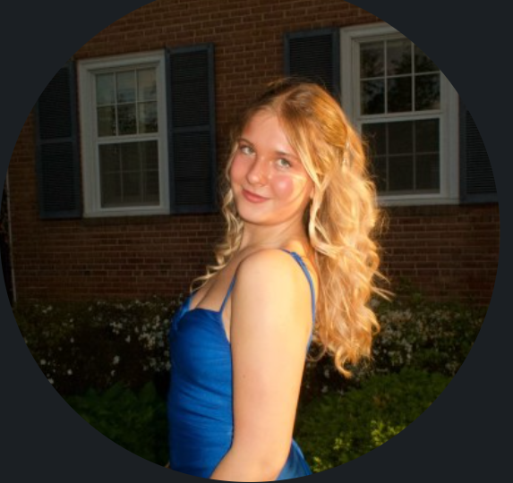

I am a writer and social media director with a passion for broadcast journalism and a potential minor in general business and voice. Email: jenbax0@gmail.com
I write articles, help with podcast script writing, attend events, and attend weekly meetings for my supervisor who runs the magazine. I am also currently growing my own crops to be reported on at the end of the semester. I am working alongside one other intern and was selected this fall to be an intern.
Each month I write a column for the column I created titled GenZ thru JenB which covers teenage through college based topics for readers of my neighborhood magazine. I previously interned for my supervisor as the content coordinator as well, in which I reached out to people to be featured in the magazine two months in advance including reaching out to restaurants. This magazine is hardcover and is sent out to residents each month.
Originally I was the copy editor for the weekly newsletter of Stories Beneath the Shell, an on campus publication, but was later promoted to the newsletter writer position in which I summarize and paraphrase the newspaper's top stories from the week into a general newsletter. I do this every Friday and Saturday so that it can get published that weekend onto their website.
I am the creator of many of the social media posts for Her Campus Magazine’s Instagram and other social media accounts. I use Canva and TikTok to create these posts and am the head of the other social media committee members that help create posts as well. I ensure that everything runs smoothly in terms of creating at least one or two posts a day for the accounts to recruit as many members to our on campus organization as possible.
I occasionally attend practice, and live on campus shows for Capital News Service as a volunteer to help operate cameras and audio and ensure the shows run smoothly.
I am the person in charge of running fundraising events and adding fundraising aspects to other people’s events throughout the year for this on campus organization. In 2025 I was Co-Fundraising chair alongside one other person, but this year I am running the position on my own. I come up with event ideas to raise the most money possible to help fund different aspects of our organization, while also ensuring that they take place thoroughly.